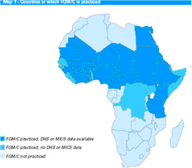
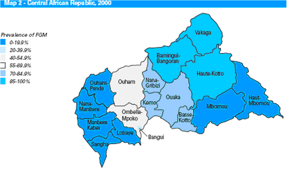
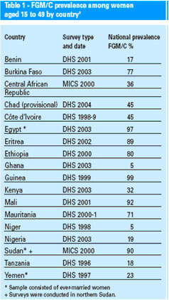
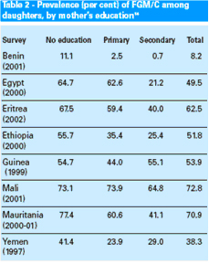

كودكي خردسال بر اثر خنته در گذشت،
پدري در نيويورك اندام تناسلي دخترش را با چاقو قطع كرد
از سال 1995 60 زن بر اثر ختنه جان سپردند و 6000 دختر در بيمارستانها بستري شدهاند
اين اخبار بخش كوچكي از از يك خشونت مرسوم است خشونت وحشيانهاي كه بيش از 4000 سال نسل به نسل انجام ميگيرد و دل هر انسان سالمي را به راستي به درد ميآورد.
ختنهي زنان يا چنانكه شايستهتر است امروز گفته شود، مثلهي اندامهاي تناسلي زنان (اف،جي، ام)**،چيزي جز بريدن اندام تناسلي زنان نيست و عمدتا در 28 كشور آفريقايي و برخي ازمناطق آسيا انجام ميشود. با وجود اينكه 14 كشور به طور قانوني آن را نفي كردند و چند كشور بور كينا فاسو، مصر، غنا، سنگال و سرا ليون كساني را كه به ختنه زنان دست مي زنند توقيف و محكوم مي كنند تاكنون اثري در كاهش گستردگي اين عمل ديده نميشود.
يونسيف در سال 2005 گستردگي انجام اين عمل را در قاره آفريقا بررسي كرده كه نتايج آن در جدول 1 آمده است. طبق بر آورد سازمان بهداشت جهاني تعداد زنان و دختران كه تا كنون ختنه شدند بين 100 تا 140 ميليون است همچنين سازمان ملل اين رقم را 130 ميليون گزارش داده است. اين در حالي است كه بر اساس گفتهي هر دو سازمان هر ساله دو ميليون دختر در معرض خطر قرباني شدن قرار دارند. يعني روزي 6000 هزار دختر.
تنوع اين عمل از نظر خشونت، بر حسب موقعيت جغرافيايي و روال فرهنگي نوسان پيدا مي كند. سازمان بهداشت جهاني اين عمل را به 4 نوع عمده تقسيم مي كند:
1. حالت اول: شامل بريدن لبهي كليتورس¹ و در برخي موارد بريدن تمامي آن
2.حالت دوم: در اين گونه كليهي كليتورس و بخشي و يا تمامي لابياي مينور² بريده مي شود
3.حالت سوم: انتهاي طيف دو حالت قبلي است و ختنهي عميق نام دارد كه شامل برداشتن كليتورس و لابيا مينور و ماژور³ است .كه در اين حالت دو طرف لابيا توسط بخيه، چسب، گاهي خار به هم وصل ميشود. در اين حالت بيشتر دهانه واژن بسته مي شود و تنها مجراي كوچكي باقي مي ماند كه ادرار و خون خارج شود لازم به ذكر است كه نوع ختنه متداول ترين شكل موجود است كه بر روي 80 درصد دختران در سومالي انجام مي گيرد.
4.حالت چهارم: در كشورهاي چون مالزي و سنگاپور بيشتر اين نوع ختنه رايج است كه در اين مدل پوست روي كليتورس بر داشته مي شود.
گفتني است كه غير از 4 حالت در برخي مناطق نوع ديگري از ختنه ديده شده است كه در اين حالت با دوختن بخشي از دهانهي واژن سعي بر تنگ كردن آن شده است.
به لحاظ سنتي هنگامي كه زنان آماده ازدواج ميشوند اين سوراخ بسته شده ميتواند باز شود كه به طور معمول همسر با هر بار هم آغوشي سعي بر باز شدن آن ميكند.
ختنه زنان معمولا قبل از سن بلوغ در محدودهي سني 4 تا 12 سالگي صورت مي گيرد .با وجود اين گاهي در نوزادي و يا قبل از ازدواج نيز انجام شده است. اين عمل هر بار بايد بر روي يك دختر انجام گيرد ولي معمولا دختران كه در يك گروه سني هستند با هم ختنه مي كنند تمامي خنته ها در شرايط كاملا ابتدايي به وسيله قابله يا زني دهاتي انجام مي گيرد. از هيچ داروي بيهوشي استفاده نمي شود. دختران را با هر ابزاري كه دردسترس باشد ميبرند: تيغ ريش تراشي، چاقو، قيچي، شيشهي شكسته، سنگ تيز و در بعضي مناطق داندان.
سازمان بهداشت جهاني و ساير تشكيلات پزشكي ادعا كردند كه اين عمل غير ضروري و دردناك است و نبايد در كتب پزشكي مجاز دانسته شود. به هر حال عوارض آني ختنهي عميق شوك، عفونت، آسيب مجراي ادرار، زخم، بيماري كزاز، عفونتهاي مثانهاي، عفونتهاي خوني، ايدز و يرقان است. عوارض دراز مدت عبارتاند از عفونتهاي مزمن يا متناوب مجراي ادرار و لگن كه ميتواند به نازايي، تشكيل كيست و دمل در ناحيهي مجراي زنانه منجر شود، برآمدگي دردناك در مسير اعصاب، دشواري فزاينده ادرار، قطع قاعدگي، جمع شدن خون قاعدگي در شكم، سرد مزاجي، افسردگي و مرگ و آنچه كه شايد از ساير موارد مهمتر باشد اين است كه زن در تمامي عمرش از لذت عمل جنسي محروم خواهد بود.
متاسفانه تعداد دختران مهاجر كه به دست تيغ قابله سپرده ميشوند كم نيست. آفريقايي ها به هر كجا كه مهاجرت كردند اين سنت را با خود بردهاند. به گفتهي واريس ديري سفير مخصوص سازمان ملل 27 هزار زن در نيويورك تحت اين عمل قرار گرفتهاند يا خواهند گرفت. قانون گذاران بر اين باورند كه لازم است قوانين جداگانهاي براي حمايت كودكان در معرض خطر قرار دارند وضع شود چرا كه بسياري از خانوادهها ادعا ميكنند كه اين از حقوق مذهبيشان است و هيج دولتي اجازه مداخله در اين باره ندارد.
بسياري مدعي هسنتد اين عمل يكي از آيينهاي مذهب اسلام است اما واقعيت اين است كه اين خشونت به طور يكسان در ميان مذاهب مختلف ديده مي شود. عمدهترين عامل انجام اين سنت باكره نگه داشتن دختران تا قبل از ازدواج است و اساسا اين رسم را مردان مطالبه مي كنند. مردان خودخواهي كه ميخواهند مالكيت خود را بر مطالبات جنسي زنانشان اعمال كنند و از آنجايي كه در اين فرهنگها جايي براي زن ازدواج نكرده وجود ندارد مادران خود مايلند كه اين خشونتي كه بر خودشان اعمال شده است بر روي دخترانشان نيز اعمال شود زیرا كسي نيست كه فرزندشان را به زني قبول كند و دخترشان تا آخر عمر كثيف و حشري خوانده ميشود .مادران آفريقايي درست مانند مادران غربي كه تمام فكرشان اين است كه دخترانشان تحصيل كنند وظيفهشان را در ايجاد بهترين موقعيت براي ازدواج دخترانشان ميبينند. شايد بهتر باشد جهل و خرافات را مهم ترين عامل اين خشونت بدانيم و بهترين دليل توقف آن را درد و رنج و مرگي كه از آن به جا ميماند.
گستردگی ختنه حالت سوم

درصد شیوع خنته در آفریقای میانه

درصد گستردگی ختنه حالت سوم در کشورهای آفریقایی

ارتباط میان تحصیلات مادران و شیوع ختنه دختران

**FGM (Female Genital Mutilation)
1. Clitoris
2. Labia Minor
3. Labia Major
منابع :
1.تحقيق انجام شده در سال 2005 توسط سازمانfecinU
2.كتاب گل صحرا نوشته واريس ديري و كاتلين ميلر
3.ترجمهي از مقاله منتشر شده توسط سازمان بهداشت جهاني
4.سايت واريس ديري سفير سازمان ملل